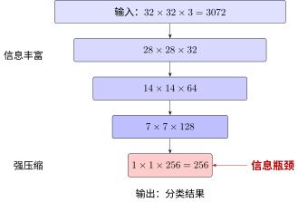

改造的本质：从"会用 CNN"到"会设计 CNN"#
神经网络基础：从理论到架构 中我们学习了 LeNet、Inception、ResNet 等经典架构；CNN 中的注意力机制 中我们掌握了通道注意力、空间注意力等改造技术。到目前为止，你已经有了丰富的"零件库"。
但会辨认零件和会设计汽车是两码事。本章要解决的是第二部分：面对一个具体任务，你应该怎么设计网络？表现不好时，该从哪下手？
先想想我们目前积累的"零件库"：
零件 |
来源 |
解决什么问题 |
|---|---|---|
卷积（不同大小） |
提取局部特征 |
|
池化 |
降采样、增大感受野 |
|
跳跃连接 |
让梯度能传回浅层 |
|
多分支并行 |
同时看多个尺度 |
|
通道注意力 |
知道哪个特征重要 |
|
空间注意力 |
知道哪里重要 |
现在的问题是——这些零件之间是什么关系？它们的设计思想能不能提炼成一套通用原则？
信息论：诊断架构瓶颈的工具#
在开始改造之前，我们需要一个"听诊器"——能告诉你模型问题在哪的工具。
这个听诊器来自信息论：神经网络本质上是把输入信息压缩、变换、提取的过程。信息在层层传递中会面临两个问题：
信息漏斗：容量不够#
想象一个沙漏——上宽下窄。

信息漏斗：容量瓶颈
数据从 3072 维压到 256 维，每压缩一次就丢失一些信息。如果网络太"窄"（通道数太少），就像漏斗的口太小——还没提取够就挤过去了。这就是容量不够。
梯度消失：传不过去#
另一种问题更隐蔽：信息量够，但传不回来。
想象一个传话游戏——100 个人，每人说一遍。理论上每个人都能说清楚，但实际上第 1 个人的话传到第 100 个人时早已面目全非。
梯度消失（Vanishing Gradient） 中讨论过：梯度是各层影响的乘积。层数一多，浅层的梯度就像在传话游戏中一样，衰减到几乎为零。这就是信息传不过去。
互信息#
在深入讨论之前，我们需要一个信息论的核心概念：互信息（Mutual Information）。
直觉理解：互信息衡量的是"知道 \(Y\) 后，\(X\) 的不确定性减少了多少"。在神经网络中：
\(X\)：输入数据
\(Y\)：模型输出或中间层特征
\(I(X;Y)\)：模型保留了多少输入信息
互信息越大，说明模型从输入中提取并保留了更多相关信息。
用互信息诊断网络：一个具体例子#
想象你要设计一个分类网络，输入是 \(32\times32\) 的 CIFAR-10 图像（3072 维），输出是 10 个类别。我们来看看互信息如何帮你诊断问题。
场景一：容量不够
你设计了一个"极简"网络：
1 个卷积层（3→8 通道）
全局平均池化 → 10 维输出
计算互信息：
输入熵 \(H(X)\)：CIFAR-10 图像的信息量，约 3072 比特（假设每个像素独立）
中间表示：卷积后 \(28\times28\times8 = 6272\) 个数值，看似比输入还大
但实际有效信息：只有 8 个通道，每个通道是一个"特征图"
问题在哪？8 个通道意味着网络只能用 8 个"模式"来描述所有图像。CIFAR-10 有 10 个类别，每个类别有不同的纹理、形状、颜色——8 个模式远远不够。
从互信息角度：\(I(X; \hat{Y})\) 的上限是 8 比特（因为中间表示只有 8 个通道的特征），而分类 10 个类别需要 \(\log_2(10) \approx 3.3\) 比特——看似够，但每个类别内部还有巨大变化（同一类别的不同图像差异很大）。
信息瓶颈的量化：如果瓶颈层只有 256 维（如 ResNet 的最后特征层），而你需要区分的类别有 1000 个（ImageNet），每个类别平均只能分到 0.256 维的"特征预算"——这显然不够。
场景二：信息传不过去
你设计了一个很深的网络：50 层，每层都是标准卷积+ReLU，没有跳跃连接。
前向传播时：
第 1 层能看到原始图像，信息丰富
第 10 层还能保留大部分信息
第 50 层：由于 ReLU 的截断效应和多次非线性变换，很多输入信息已经"丢失"了
反向传播时：
损失对第 50 层的梯度很清晰
传到第 40 层开始衰减
传到第 1 层几乎为零
互信息视角：
\(I(X; h_{50})\)：输入与第 50 层特征的互信息——由于逐层变换，这个值可能很小
\(I(h_{50}; \hat{Y})\)：第 50 层与输出的互信息——如果 \(h_{50}\) 已经丢失了关键信息，这个值也上不去
这就是退化问题：网络很深，但浅层学不到东西，深层也提取不到好特征。
互信息视角下的改造策略#
改造策略 |
解决的问题 |
互信息解释 |
典型案例 |
|---|---|---|---|
加宽（更多通道） |
容量不够 |
增加 \(I(X; h)\) 的上限 |
VGG 从 64→512 通道 |
加深（更多层） |
表征能力不足 |
学习更复杂的 \(P(Y|X)\) |
ResNet 152 层 |
跳跃连接 |
信息传不过去 |
保持 \(I(X; h_L) \approx I(X; X)\) |
ResNet、U-Net |
多尺度特征 |
丢失细节或全局 |
同时保留 \(I(X_{local}; h)\) 和 \(I(X_{global}; h)\) |
FPN、Inception |
注意力机制 |
信息淹没 |
增强 \(I(X_{task}; h)\)，抑制无关信息 |
SE-Net、CBAM |
知识蒸馏 |
小模型容量不够 |
用小模型逼近大模型的 \(I(X; Y)\) |
Teacher-Student |
关键洞察
架构改造的本质是控制信息流：
扩大容量：让 \(I(X; \hat{Y})\) 足够大（能装下任务需要的信息）
保持通路：让 \(I(X; h_L) \approx I(X; X)\)（信息能传到底层）
筛选信息：让 \(I(X_{task}; h) \gg I(X_{noise}; h)\)（留下有用的，去掉噪音）
所有改造技术——Inception、ResNet、注意力、DW 卷积——都在解决这三个问题之一。
改造的四个维度#
从信息论出发，架构改造自然分为四个维度：
维度 |
核心问题 |
代表性策略 |
信息论映射 |
|---|---|---|---|
感受野 |
看什么？ |
多尺度、空洞卷积、FPN |
信息入口——多频段采样 |
深度与连接 |
怎么传？ |
跳跃连接、密集连接、特征融合 |
信息通路——防止信息瓶颈 |
注意力 |
重点看哪？ |
通道注意力、空间注意力、自注意力 |
信息路由——选择任务相关信息 |
计算效率 |
怎么更快？ |
DW 卷积、Bottleneck |
信息压缩——利用冗余降本 |
前三个是效果维度（让模型更好），最后一个是效率维度（让模型更快）。
这四者不是孤立的。一个好的架构改造往往同时考虑多个维度。比如 ResNet 的跳跃连接不仅解决了梯度问题（维度二），也间接扩大了每层的有效感受野（维度一）。
从本章开始#
接下来的每一章聚焦一个维度。我们不会罗列所有技术（那是论文做的事），而是提炼设计心法——理解每种设计解决了什么信息论问题，什么时候该用。
学完本章后，你面对一个模型表现不佳时，不会再盲目地"加层、加参数、加注意力"，而是能系统地判断：
问题在哪？感受野不够、信息传不过去、还是没注意重点？然后对症下药。
让我们从第一个维度开始——操控感受野：网络应该看多大。
贡献者与修订历史
查看详细修订记录
-
15d1b152026-05-03 - Heyan Zhu: docs(model-architecture-design): add new chapter on CNN architecture design methodology